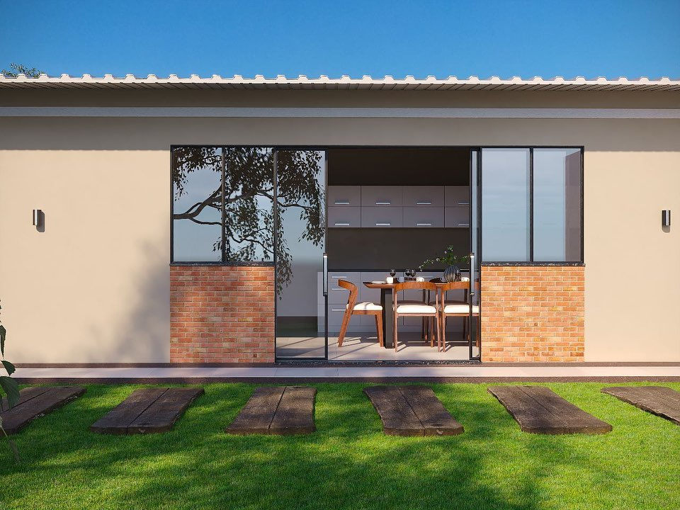

01
Vidrios templados de alta resistencia
Instalaciones seguras para el hogar y la industria.

Vidrios Blindex · Revestimiento y acabados
Vidrios Blindex revestimiento y acabados. 25 años de experiencia transformando espacios en toda la provincia de Misiones.
Nuestra esencia
La experiencia se ve en cada detalle. Somos especialistas en la instalación de cristales de alta complejidad para el hogar y la industria, con un compromiso que no cambia: calidad, seguridad y precisión en cada proyecto.
Cristales templados de alta resistencia y herrajes de primera línea.
25 años garantizando instalaciones seguras y terminaciones impecables.
Soluciones integrales para cada estructura, con asesoramiento técnico.
Lo que hacemos
Cristal, diseño y precisión. Un servicio integral, desde la primera idea hasta el último detalle.
Instalaciones seguras para el hogar y la industria.
Transparencia y carácter para cada arquitectura.
Seguridad con una vista sin interrupciones.
Luz natural y protección para tus espacios.
Diseño a medida y terminaciones impecables.
Exclusivamente materiales premium. No realizamos PVC.
Proyectos y novedades
Fachadas y revestimientos
Revestimiento y acabados
Carpintería en vidrio
Vidrios y cerramientos
Terminaciones a medida
Cielorrasos a medida
Hablemos de tu proyecto
Contanos qué tenés en mente. Te acompañamos con asesoramiento y un presupuesto a la medida de tu proyecto.